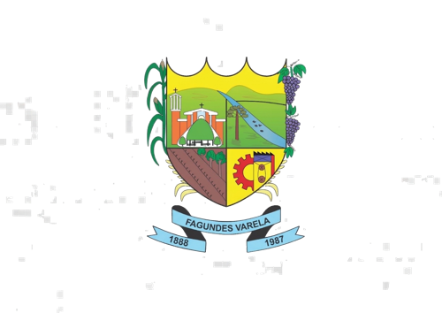

Sobre o passeio
O 4° Passeio Ciclístico dos Falcões é um evento de cicloturismo pelas estradas e trilhas do interior de Fagundes Varela, passando por diversas localidades do município até a sede. Reúne ciclistas da região e de outras cidades num domingo de confraternização sobre duas rodas.
Programação
- 7hRecepção dos ciclistas: inscrições, café da manhã
- 8h30Largada para o passeio pelas estradas do interior
- —Chegada no Parque de Eventos da Bella Festa, com almoço por adesão na praça de alimentação
O que está incluso
Café da manhã
Medalha
Pontos de apoio / hidratação
Numeração do ciclista
Troféus para os KOMs
Chuveiros e vestiários
Fotos dos passeios anteriores
Confira alguns momentos das edições passadas.


Você será redirecionado para o formulário oficial de inscrição (valor e chave Pix estão lá)
Para mais informações sobre o passeio, siga nosso Instagram @falcoesciclismo
Promoção:
Falcões Ciclismo Fagundes Varela
Apoio:

Município de Fagundes Varela